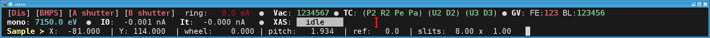
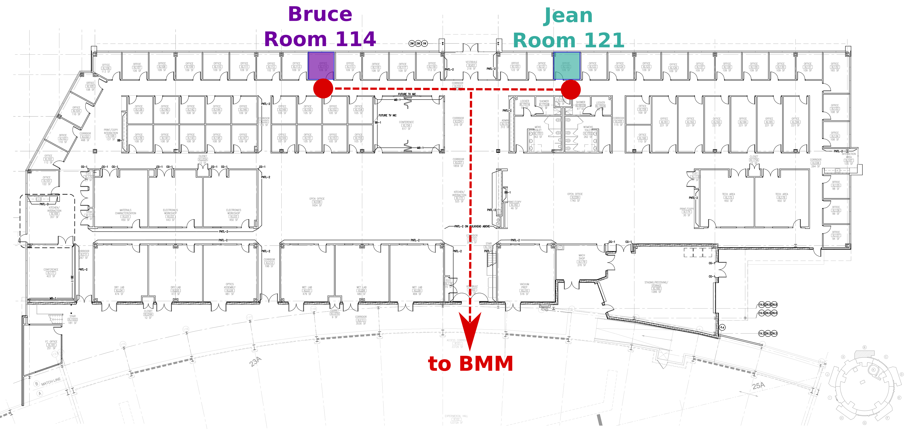

1. Introduction to BMM¶
At the unix command line, type bsui to start the BlueSky user
interface. bsui is simply an Ipython shell
with some customizations specific to BlueSky. On top of that, there
are a number of customizations specific to BMM.
In this user manual, there are chapters covering most of the chores one will need to do at the beamline, including:
moving motors
changing the state of the photon delivery system
making motor scans
making energy scans
interacting with the beamline’s electronic log book
troubleshooting common problems
1.1. TL;DR¶
- Change energy
Use the
RE(change_edge())command, see Photon Delivery System, Section 3- Sample alignment scans
Use the
RE(linescan())command, see Sample position scans, Section 4- XAFS scan
Use the
RE(xafs())command, see Run an XAFS scan, Section 5.4- Macro for moving motors and measuring XAFS
Edit the
macro.pyexample in your data directory, see Scan sequence macro, Section 5.6
1.2. The user experience¶
The Ipython/bsui prompt at BMM is modified to provide at-a-glance information about the state of the beamline.
{kind=link}
Fig. 1.1 The BlueSky user prompt at BMM¶
The green
BMMindicates that the beamline is set up and ready for the user (see Section 1.2.2). When the beamline is not ready for users, theBMMstring is red.The string
D.111indicates that the photon delivery system is in mode D (see Table 3.3) and that the Si(111) monochromator (Section 3.7.2) is in use.The green number in square brackets is an incremented count of how many commands have been issued since
bsuiwas started.
1.2.1. CA Dashboard¶
At the top of the big screen, you see a crude-but-handy beamline monitor. It looks like this:
{kind=link}

Fig. 1.2 The CA dashboard beamline monitor¶
This provides a (very) concise overview of the state of the beamline.
- Line 1
In short, if the top line has no red text, the beamline is all ready to go.
BMM is enabled (green) or disable (red)
The BM, FE, & user photon shutters are open (green) or closed (red)
The ring current
The state of vacuum sections 1 through 7 – green means vacuum level is OK, red means vacuum level is high
The state of the in-vacuum motors, 4 on the DCM, 2 on the focusing mirror, 2 on the harmonic rejection mirror – green means temperature is cool, red means temperature is high
The open (green) or closed (red) state of the 3 front end gate valves and the 6 beamline gate valves
- Line 2
The energy position of the monochromator
The signals on the I0 and It ion chambers, measured in nanoamps
The current operation at the beamline, options are: idle (white), XAFS scan (pink), line scan (cyan), area scan (yellow), or time scan (blue)
- Line 3
Positions of common sample motors and size of sample slits
For more information about this tool, follow this link, which explains how to run the tool and position it on the screen. It also explains how to launch the tool when the beamline is set up for XRD measurements.
1.2.2. Starting and ending an experiment¶
When a new experiment begins, run the command:
BMMuser.start_experiment(name='Betty Cooper', date='2019-02-29', gup=123456, saf=654321)
This will create that data folder and populate it with an
experimental log (Section 6), define the DATA
variable for use in simplifying certain commands, write a template for
a scan.ini file (Section 5), write a template for a
macro file (Section 5.6), configure the logger to
write a user log file (Section 6.1) for this
experiment, set the GUP and SAF numbers as metadata for output files,
and set up snapshot (Section 6.2) and dossier
(Section 6.3) folders.
The name should be the PI’s full name, preferably transliterated
into normal ASCII. The date should be the starting day of the
experiment in the YYYY-MM-DD format.
Once the experiment is finished, run this command:
BMMuser.end_experiment()
This will reset the logger and the DATA variable and unset the GUP
and SAF numbers.
1.2.3. Getting help at the command line¶
To see a summary of common commands, use %h:
Open the shutter: shb.open()
Close the shutter: shb.close()
Change energy: RE(mv(dcm.energy, <energy>))
Move a motor, absolute: RE(mv(<motor>, <position>))
Move a motor, relative: RE(mvr(<motor>, <delta>))
Where is a motor? %w <motor>
Where is the DCM? %w dcm
Where is M2? %w m2
Where is M3? %w m3
Where are the slits? %w slits3
Where is the XAFS table? %w xafs_table
Summarize all motor positions: %m
Summarize utilities: %ut
How long will a scan seq. be? howlong('scan.ini')
Run a scan sequence: RE(xafs('scan.ini'))
Scan a motor, plot a detector: RE(linescan(<det>, <motor>, <start>, <stop>, <nsteps>))
Scan 2 motors, plot a detector: RE(areascan(<det>, <slow motor>, <start>, <stop>, <nsteps>, <fast motor>, <start>, <stop>, <nsteps>))
Make a log entry: BMM_log_info("blah blah blah")
DATA = /home/bravel/BMM_Data/bucket
All the details: https://nsls-ii-bmm.github.io/BeamlineManual/index.html
and to see a summary of some useful command line hotkeys, %k:
Abort scan: Ctrl-c twice!
Search backwards: Ctrl-r
Quit search: Ctrl-g
Beginning of line: Ctrl-a
End of line: Ctrl-e
Delete character Ctrl-d
Cut text to eol Ctrl-k
Cut text from bol Ctrl-u
Paste text Ctrl-y
More details: http://readline.kablamo.org/emacs.html
The day will come that we have a GUI for running XAFS experiments at BMM. For now, we have the command line. Read on – it’s not too difficult!
1.3. BMM and LOB3¶
{kind=link}

Fig. 1.3 Bruce’s and Jean’s offices in LOB 3¶
1.4. A Bit about BMM¶
BMM is an XAS beamline. As such it is on the simpler end of things at NSLS-II. We use an NSLS-II three-pole wiggler (3PW) as our photon source. This provides broadband radiation throughout the hard X-ray range, up to about 30 keV. It is a small device – only about 40 cm long and with a magnetic path length of about 12 cm – which is inserted in a short section between the two bend magnets in the dual-bend achromat lattice at NSLS-II. The flux is certainly not the equal of any of the many-pole insertion devices in the straight, but it is highly performant for many XAS experiment.
About 13 meters from the source, we have a paraboloid collimating mirror. This position is well within the storage ring tunnel and about 12 meters from the entrance to the BMM first optical enclosure. We placed a mirror at that location to capture the largest possible swath of the divergent light coming from the 3PW source. A paraboloid is the correct shape for focusing light in both the horizontal and vertical directions. However, a paraboloid must be a fixed figure, fixed angle device in order to optimally collimate the light. Because the mirror is in the front end, thus inaccessible during operations, we found the paraboloid to be an attractive solution. Once aligned in the beam, it should never need adjustment.
The collimated light is delivered to a double crystal monochromator (DCM). The DCM has pairs of Si(111) and Si(311) crystals which are accessed by translating the DCM vacuum vessel laterally (Section 3.7.2) . A transition between the two crystal sets takes about 2 minutes.
After the DCM, we have a toroidal focusing mirror followed by a flat harmonic rejection mirror. One or both of these mirrors is in the beam depending on the configuration of the XAS experiment (Section 3.7.1) in the end station. Because the beam is deflected upward after the collimating mirror, at least one of the mirrors after the DCM must be used in order to deflect the beam through the lengthy transport pipe and into the end station.
Because the collimating mirror is at a fixed angle, it only serves as a harmonic rejection mirror above an energy determined by its operating angle. That turns out to be about 23.5 keV. For XAS experiments conducted above 8 keV, then, the harmonic rejection provided by the collimating mirror is adequate. At lower energies, the flat harmonic rejection mirror is used to provide clean beam.
With just the harmonic rejection mirror in place, a beam of size 8 mm by 1.4 mm is delivered to the end station. For many XAS experiments, this rather large beam is desirable. Indeed, many of the visitors to BMM specifically request the large beam for their experiments. With the focusing mirror in place, that large swath is reduced to a spot of about 300 μm by 200 μm.
This manual is copyright © 2018-2019 Bruce Ravel
 This document is licensed under The Creative Commons Attribution-ShareAlike License.
This document is licensed under The Creative Commons Attribution-ShareAlike License.
If this document is useful to you, please consider supporting The Creative Commons.